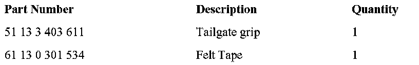

Body - Tailgate Latch Releases Unexpectedly
SI B 51 26 06Body Equipment
December 2006
Technical Service
SUBJECT
Tailgate Latch Releases Unexpectedly
MODEL
E83 (X3)
SITUATION
The customer may complain of the tailgate latch releasing unexpectedly and intermittently. This will cause the door ajar light to illuminate in the Kombi either while driving or when first starting the vehicle.
CAUSE
This situation may occur for one of the following reasons:
1. The wire harness leading to the tailgate grip may have become chafed and shorted on the stamped sheet metal opening in the tailgate which the harness runs through.
2. The tailgate grip may malfunction due to water contamination (up to 1/2006 production).
3. The customer may inadvertently press the tailgate release button on the key.
CORRECTION
On a customer complaint basis, the appropriate correction from the following list should be implemented.
Depending on the cause previously noted:
1. The damaged wires should be repaired and re-insulated.
2. The tailgate grip has been revised as of 1/2006 to be less susceptible to water intrusion and should be replaced on vehicles produced up to that date.
3. The customer should be informed about the sensitivity of the tailgate release button on the key.
PROCEDURE
1. Repairing damaged wires:
- Remove the tailgate trim panel per Repair Instruction RA 51 49 008 and trace the wires to the tailgate grip, looking for signs of damage, particularly around the stamped opening in the tailgate that the harness runs through.
- Perform a standard wire repair and re-insulation as necessary, depending on the extent of damage to the wires.
- Place felt tape over any sharp edges on the sheet metal opening which may have influenced the chafed and shorted wires.
2. Replacing the tailgate grip:
- Replace the tailgate grip with the updated part per Repair Instruction RA 51 13 402.
3. Educating the customer
- Inform the customer that if the tailgate latch releases when they are not in the car, the tailgate release button may have been activated accidentally.

PARTS INFORMATION
WARRANTY INFORMATION
Covered under the terms of the BMW New Vehicle Limited Warranty.
Defect Code Refer to KSD
Labor Operation: Refer to KSD
Labor Allowance: Refer to KSD

Disclaimer